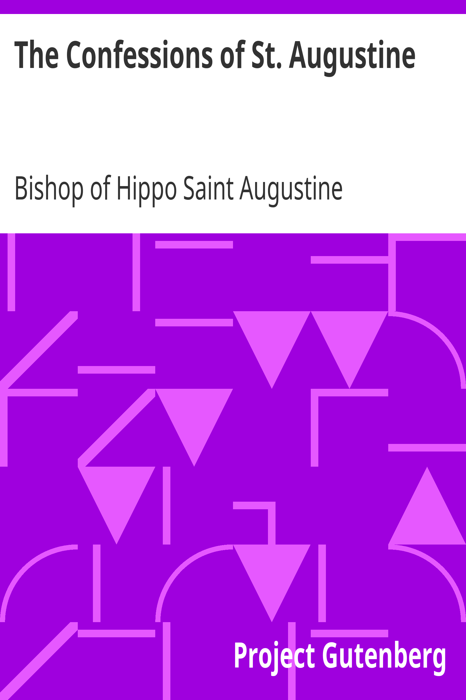
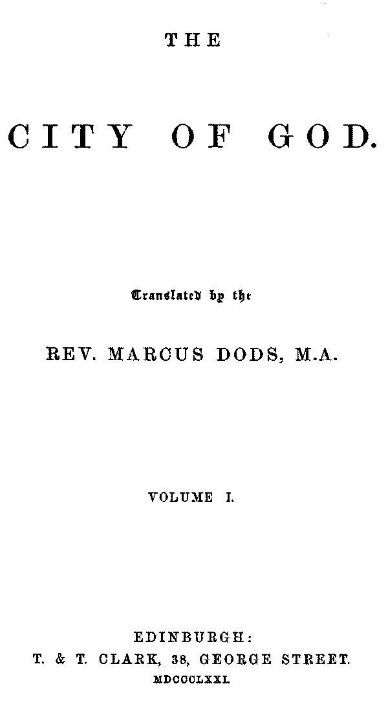
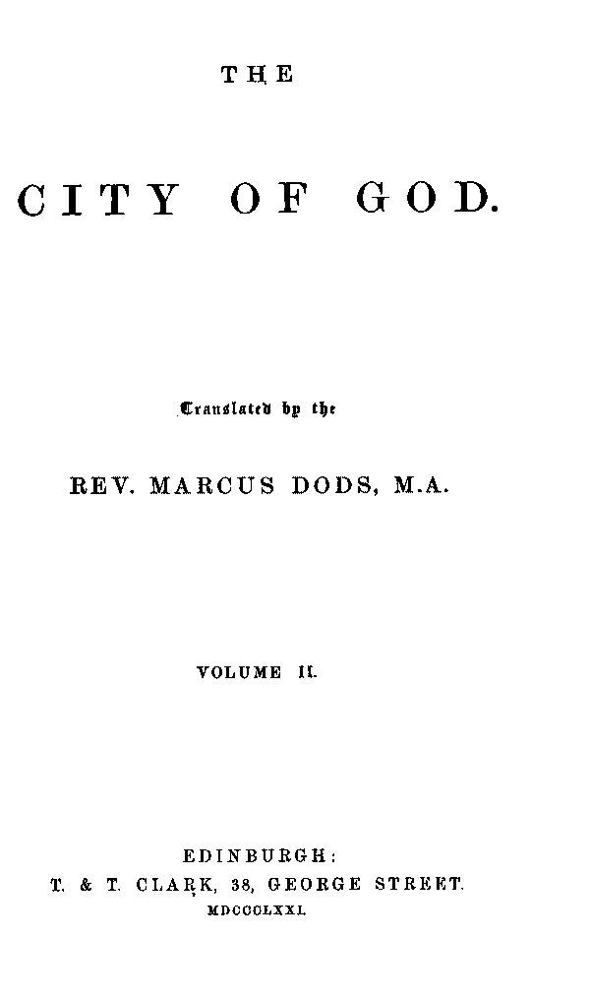
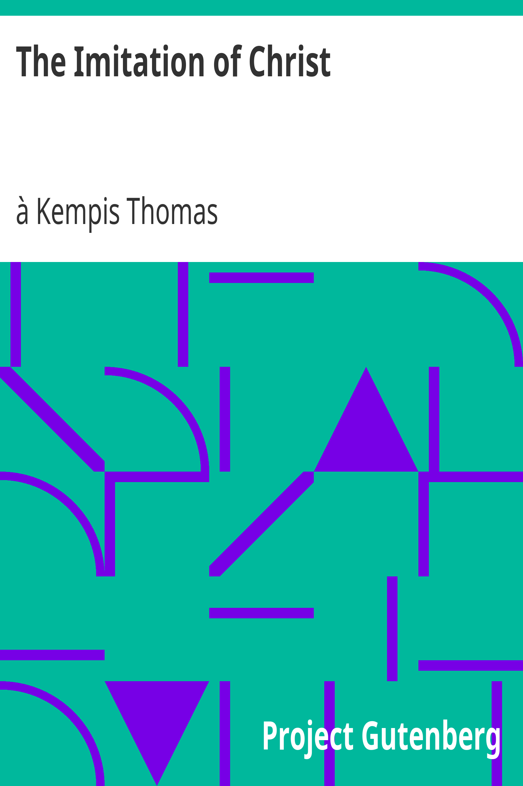

Livros de Religiosidade

Confissões
Santo Agostinho
Religião
A obra-prima de Santo Agostinho, onde ele narra sua jornada espiritual e busca por Deus.
Abrir Livro 📖

A Cidade de Deus - Volume 1
Santo Agostinho
Religião
Uma análise profunda da sociedade e da política de sua época, defendendo a cidade de Deus contra as críticas de seus contemporâneos.
Abrir Livro 📖

A Cidade de Deus - Volume 2
Santo Agostinho
Religião
Uma continuação da análise de Santo Agostinho sobre a sociedade e a política, aprofundando-se na defesa da cidade de Deus.
Abrir Livro 📖

A Imitação de Cristo
Tomás de Kempis
Religião
Um dos livros mais influentes da espiritualidade cristã, oferecendo reflexões sobre a vida de Cristo e a prática da fé.
Abrir Livro 📖
A Peregrinação do Cristão
John Bunyan
Religião
Uma alegoria da jornada espiritual de um cristão, abordando temas de fé, dúvida e redenção.
Abrir Livro 📖